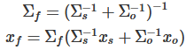

退化は環境形状が単純な時に生じやすくなる。例えば、廊下などの平行線ではスキャンマッチングを点群データからでは分からず退化が起こる。そのため、退化への対策を講じる必要がある。そのための有効な手法として別のセンサを用いる方法がある。移動ロボットｐにおいて最も一般的なのはオドメトリを併用することが挙げられる。このように、複数のセンサ情報を組み合わせることを「センサ融合」と言う。
センサ融合は一言でいうと「複数センサによる推定値の平均をとる」こと。その際、センサデータの信頼性に基づいた重みを付けて平均を取る。下の図ではスキャンマッチングの推定値の分布とオドメトリの推定値の分布を表している。レーザスキャナには2毎の壁しか見えないので、スキャンマッチングによるロボット位置の推定値は図の様に長い分布になる。一方、オドメトリの推定値は小さな楕円に収まる。この二つの推定値を融合すると黒丸の位置に推定値が得られる。これは両社の分布による「重み」に応じて配分された位置である。
重みとして良く用いられるのは
共分散である。共分散はデータや推定値のばらつき具合を示す値で、任意の確率分布で定義できるが、ここでは正規分布を用いる。
正規分布は多くの誤差分布に当てはまり、しかも平均と共分散の2つのパラメータだけで表現できるので計算がしやすい。
正規分布の融合
